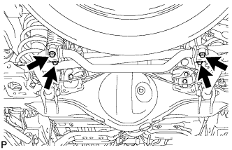

ЗАДНЯЯ ЦИЛИНДРИЧЕСКАЯ ВИНТОВАЯ ПРУЖИНА (для моделей без пневматической подвески) > СНЯТИЕ |
| 1. СНИМИТЕ ЗАДНЕЕ КОЛЕСО |
| 2. СНИМИТЕ НИЖНИЙ КРОНШТЕЙН ЗАДНЕГО СТАБИЛИЗАТОРА (для моделей с KDSS) |
|  |
Выверните 4 болта и снимите 2 нижних кронштейна заднего стабилизатора.
| 3. ОТСОЕДИНИТЕ ЛЕВЫЙ ЗАДНИЙ АМОРТИЗАТОР В СБОРЕ |
Подоприте кожух задней полуоси.
 |
Выверните болт с нижней стороны амортизатора.
Отсоедините амортизатор от кожуха оси.
| 4. ОТСОЕДИНИТЕ ГИБКИЙ ШЛАНГ ЗАДНЕГО ТОРМОЗА |
 |
С помощью разрезной головки отсоедините каждый трубопровод тормозной системы от заднего гибкого шланга, удерживая задний гибкий шланг гаечным ключом.
Снимите 2 фиксатора.
Снимите задний гибкий шланг.
 |
С помощью разрезной головки отсоедините каждый трубопровод тормозной системы от заднего гибкого шланга, удерживая задний гибкий шланг гаечным ключом.
Снимите 2 фиксатора.
Снимите задний гибкий шланг.
| 5. СНИМИТЕ ЛЕВУЮ ЗАДНЮЮ ЦИЛИНДРИЧЕСКУЮ ВИНТОВУЮ ПРУЖИНУ |
Опустите кожух оси и снимите цилиндрическую винтовую пружину.
| 6. СНИМИТЕ ПОЛУЮ ПРУЖИНУ В СБОРЕ (для 5-дверных моделей) |
Снимите полую пружину с рамы.